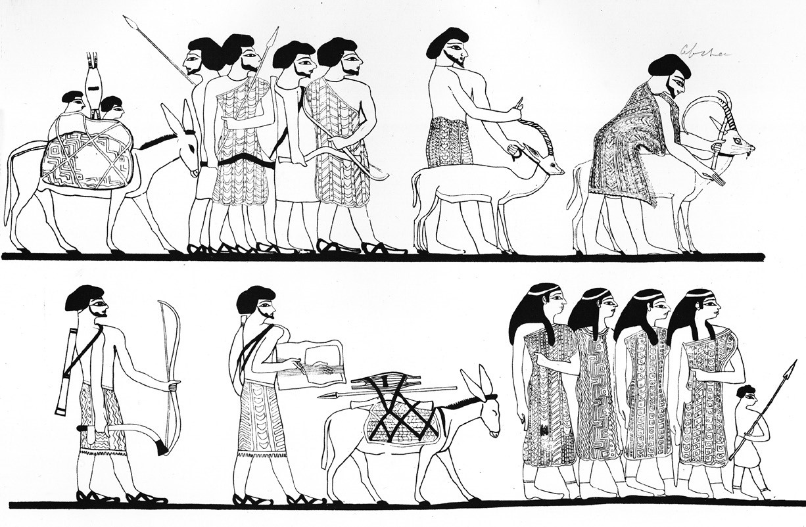
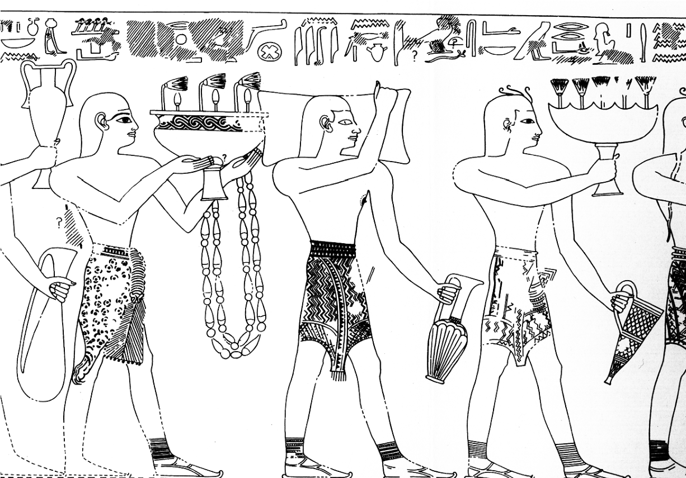

CHAPTER ONE
In about the year 1477 BC, in the city of Perunefer in the Nile delta of Lower Egypt, quite close to the Mediterranean Sea, Pharaoh Thutmose III ordered the construction of a grand palace with elaborate frescoes. Minoan artists from distant Crete, located far to the west across the Great Green (as the Mediterranean Sea was known to the Egyptians), were hired to create these frescoes. They painted pictures never seen before in Egypt— strange scenes of men leaping over bulls— with the paint applied to the plaster while it was still wet so that the colors became part of the wall itself. It was a technique, and a scene, that they had learned on Crete in the Aegean. The unique images created in this manner were now in vogue not only in Egypt but also at palaces up and down the coast, from northern Canaan to the Egyptian delta at sites now known as Kabri in Israel, Alalakh in Turkey, Qatna in Syria, and Dab‘a in Egypt.[38]
Perunefer, the city in the delta, has now been identified with modern Tell ed-Dab‘a. It is a site that has been excavated by the Austrian archaeologist Manfred Bietak and his team since 1966. The city had also previously been known as Avaris, capital city of the Hyksos, the hated invaders of Egypt who ruled much of the country from ca. 1720 to 1550 BC. Avaris was transformed into Perunefer, a valued Egyptian metropolis, after its capture by Thutmose’s ancestor, the Egyptian pharaoh Kamose, around the year 1550 BC.
In uncovering a formerly wealthy city now buried under meters of sand and debris, Bietak brought both the Hyksos capital city and the later Egyptian metropolis back to life over the course of four decades. He also recovered the amazing fresco paintings created by Minoans, or possibly local artisans trained by the Minoans, which date to the early Eighteenth Dynasty (about 1450 BC).[39] These serve as a good example of the internationalized world that began to coalesce in the Eastern Mediterranean and Aegean after the expulsion of the Hyksos from Egypt.
The Hyksos had first invaded Egypt in about the year 1720 BC, a quarter of a millennium before the time of Thutmose III. They stayed for nearly two hundred years, until 1550 BC. At the time that the Hyksos overran the country, Egypt was one of the established powers in the ancient Near East. The pyramids of Giza were already nearly a thousand years old by that point, having been built during the Fourth Dynasty, in the Old Kingdom period. Manetho, an Egyptian priest who lived and wrote during the much-later Hellenistic period in the third century BC, identified the Hyksos as “Shepherd Kings”— a mistranslation of the Egyptian phrase hekau khasut, which actually means “chieftains of foreign lands.” And foreigners they were, for the Hyksos were Semites who migrated into Egypt from the region of Canaan, that is, modern-day Israel, Lebanon, Syria, and Jordan. We see representations of such Semites in Egypt as early as the nineteenth century BC— for example, a wall painting within an Egyptian tomb at Beni Hasan, where we are shown “Asiatic” merchants and traders bringing their goods into the country.[40]
The Hyksos invasion of Egypt brought the Middle Kingdom period (ca. 2134–1720 BC) to an end. Their success was quite possibly the result of an advantage in weapons technology and first-strike capability, for they possessed composite bows that could shoot arrows much farther than a traditional bow of the time. They also had horse-drawn chariots, the likes of which had not previously been seen in Egypt.
After their conquest, the Hyksos then ruled over Egypt, primarily from their capital city of Avaris in the Nile delta, during the so-called Second Intermediate period (Dynasties Fifteen– Seventeen) for nearly two hundred years, from 1720 to 1550 BC. It is one of the only times during the period from 3000 to 1200 BC when Egypt was ruled by foreigners.

Fig. 3. “Asiatics” at Beni Hasan (after Newberry 1893, pls. xxx/xxxi; courtesy of the Egypt Exploration Society).
Stories and inscriptions dating to near the end of this period, about 1550 BC, record some of the battles that flared up between the Egyptians and the Hyksos. In particular, we have one story that records a disagreement between two rulers, The Quarrel of Apophis and Seknenre.[41] In this tale— quite possibly apocryphal— the Hyksos king Apophis complains that he is being kept awake at night by the noise from hippopotami kept in a pond
by the Egyptian king Seknenre, who was ruling simultaneously elsewhere in Egypt. The complaint is preposterous because several hundred miles separated the two royal courts; one was located in Upper Egypt and the other in Lower Egypt. The Hyksos king could not possibly have heard the hippos, no matter how loudly they were bellowing. However, the mummy of Seknenre has been recovered by archaeologists, and it is clear from wounds on his skull— made by a battle-ax— that he died violently in battle. Was the battle with the Hyksos? We do not know for certain; however, it is possible that Apophis and Seknenre fought each other, whether or not it was over hippopotami.
We also have an inscription left to us by the pharaoh Kamose, last king of the Seventeenth Dynasty of Egypt. At the time, Kamose was ruling from his home in Thebes, in Upper Egypt. He gives details about the final victorious battle against the Hyksos, whom he refers to as “Asiatics,” writing as follows in about 1550 BC:
I sailed north in my might to repel the Asiatics... with my brave army before me like a flame of fire and the... archers atop our fighting-tops to destroy their places... I passed the night in my ship, my heart happy; and when day dawned I was upon him as if it were a hawk. When breakfast time came, I overthrew him having destroyed his walls and slaughtered his people, and made his wife descend to the riverbank. My army acted like lions with their spoil... chattels, cattle, fat, honey... dividing their things, their hearts joyful.
Kamose also tells us about the fate of Avaris itself:
As for Avaris on the Two Rivers, I laid it waste without inhabitants; I destroyed their towns and burned their homes to reddened ruin-heaps forever, because of the destruction they had wrought in the midst of Egypt: they who had allowed themselves to hearken to the call of the Asiatics, (who) had forsaken Egypt their mistress![42]
And, with that, the Egyptians expelled the Hyksos from the land. They fled back to Retenu (one of the ancient Egyptian names for modern-day Israel and Syria, the same general area also known to the Egyptians as Pa-kana-na, or Canaan). The Egyptians, meanwhile, established the Eighteenth Dynasty, begun by Kamose’s brother Ahmose, which initiated what we now call the New Kingdom period in Egypt.
Avaris and the rest of Egypt were rebuilt during this period, and Avaris itself was renamed. By the time of Hatshepsut and Thutmose III some sixty years later, ca. 1500 BC, it was once again a flourishing city, this time known as Perunefer, with palaces decorated with Minoan-style frescoes depicting bull-leaping and other scenes more clearly at home on Crete in the Aegean than in Egypt proper. One archaeologist has speculated that there may even have been a royal marriage between an Egyptian ruler and a Minoan princess.[43] There are certainly a number of later Eighteenth and Nineteenth Dynasty Egyptian pharaoh swho married foreign princesses, primarily to cement diplomatic bonds or a treaty with a foreign power, as we shall see below, but it is not necessary to invoke politically instigated marriages to explain the occurrence of Minoan wall paintings in Egypt, since there is other in de pen dent evidence for contacts between the Eastern Mediterranean, Egypt, and, in this case, the Aegean.
It is clear, from a multitude of data, including archaeological artifacts, and textual and pictorial evidence, that the Minoans of Crete had already been in contact with several areas in the ancient Near East long before their interactions with the New Kingdom Egyptian pharaoh s. For example, we know of Minoan-manufactured objects that had been transported across the Aegean Sea and the Eastern Mediterranean all the way to Mesopotamia, the land between the two rivers— the Tigris and Euphrates—by the eighteenth century BC, nearly four thousand years ago.
Documentation of this ancient trade comes from the ancient site of Mari, on the western side of the Euphrates River in what is now modern Syria, where French archaeologists excavated a treasure trove of more than twenty thousand inscribed clay tablets during the 1930s. They had been summoned to the site by locals who had accidentally uncovered what they thought at first was a headless man— which turned out to be a stone statue, one of many, including one with an inscription identifying him as a king of the ancient city.[44] The tablets, inscribed with texts written in ancient Akkadian, came from an archive of royal correspondence and other more mundane records belonging to the kings of Mari, including one named Zimri-Lim who ruled ca. 1750 BC. They record all sorts of information pertinent to the administration of the palace and the organization of his kingdom, as well as aspects of daily life at the time.
One tablet, for instance, is concerned with the ice that Zimri-Lim was using in his summer drinks, which included wine, beer, and fermented barley-based drinks flavored with either pomegranate juice or licorice-like aniseed. We know that he had ordered an ice house to be built on the bank of the Euphrates, which was to be used specifically to hold ice collected from the snowy mountains during the winter until it was needed during the hot summer months. He claimed that no previous king had ever built such an ice house, and that may well have been the case, but the use of ice in drinks was not new to the region, even though one king had to remind his son to have the servants wash and clean the ice before actually putting it in the drinks. “Make them collect the ice!” he said. “Let them wash it free of twigs and dung and dirt.”[45]
The archives included records of trade and contact with other areas of the Mediterranean and Near East, with specific mention of unusual items that were received. We also know from these tablets that gifts were frequently exchanged between the rulers of Mari and those of other cities and kingdoms, and that the kings requested the ser vices of physicians, artisans, weavers, musicians, and singers from one another.[46]
Included among the exotic imported objects recorded in the tablets at Mari were a dagger and other weapons made of gold and inlaid with precious lapis lazuli, as well as clothing and textiles “made in the Caphtorian manner.”[47] Caphtor (or Kaptaru) was the Mesopotamian and Canaanite name for Crete, while the Egyptians called it Keftiu. The items had traveled a long way from Crete, acquiring what is now known as “distance value,” in addition to the inherent value that they already held because of the workmanship and the materials from which they were made.
We also have a tablet that records an unusual situation, when Zimri-Lim, the king of Mari, sent a pair of Minoan shoes from Crete as a gift to King Hammurabi of Babylon. The text says simply, “One pair of leather shoes in the Caphtorian style, which to the palace of Hammurabi, King of Babylon, Bahdi-Lim (an official) carried, but which were returned.”[48] It does not give the reason why the shoes were returned. Perhaps they simply didn’t fit or perhaps he just didn’t like them. Hammurabi’s law code, which is the first to contain the saying “an eye for an eye, a tooth for a tooth” later made famous by the Hebrew Bible, does not mention any penalties for returning items such as shoes.
It is a bit surprising that Hammurabi rejected the leather shoes, because they probably would have been both rare and unusual in his lands at the time, given the distance lying between Crete and Mesopotamia, that is, between what is now modern Greece and Syria/Iraq. Such a journey would not have been undertaken lightly and would likely have been made in stages, with different traders or merchants transporting the items for separate segments of the trip. On the other hand, such gift giving between kings of equal rank was a practice quite well known in the ancient Near East during the second millennium BC. In these cases, the items in question were brought directly by emissaries of one king, in what we would call today a diplomatic embassy. There is even textual evidence for “regifting” upon occasion— “I have taken a rhyton of silver and a rhyton of pure gold from the gift of the King of Egypt and I have sent them to you,” the Hittite king Hattusili III once wrote to another ruler.[49] I have often wondered why Hammurabi didn’t simply regift those Minoan shoes.
From the foregoing, it is clear that the Minoans of Crete were in contact with several areas in the ancient Near East during the Middle and Late Bronze Ages, from at least 1800 BC on. There is even mention in the Mari letters of Minoans, and a possible Minoan interpreter (or an interpreter for the Minoans), pre sent at the site of Ugarit in north Syria during the early eighteenth century BC, where they were receiving tin that had been sent westward from Mari.[50] However, there seems to have been a special relationship with Egypt beginning in the fifteenth century, during the time of Hatshepsut and then Thutmose III, which is why our tale begins at this point in time.
It is interesting to note that the Minoan civilization was given its name by the British archaeologist Sir Arthur Evans in the early 1900s. We don’t actually know what they called themselves, although we do know that the Egyptians, Canaanites, and Mesopotamians each had a name for them, as just mentioned. Furthermore, we do not know where they came from, although our suspicion points to Anatolia/Turkey as most likely.
We do know that they established a civilization on Crete during the third millennium BC that lasted until ca. 1200 BC. Partway through this period, in about 1700 BC, the island was hit by a devastating earthquake that required the rebuilding of the palaces at Knossos and elsewhere on the island. In addition, the volcanic island of Santorini (also known as Thera), which is located some seventy miles directly to the north of Crete, exploded in a massive eruption in 1628 BC or soon thereafter, according to our current understanding of the radiocarbon and other dating results. Crete was hit by a tsunami caused by the eruption and blanketed by ash and other volcanic debris that covered the crops and fields. However, the Minoans, although initially impacted by these natural catastrophes, quickly recovered and flourished as an in de pen dent civilization until Mycenaeans from the Greek mainland invaded the island soon after 1450 BC, after which time the island continued under Mycenaean rule until everything collapsed ca. 1200 BC.[51]
Sir Arthur Evans began excavating on Crete after tracking down the source of so-called milk stones that he found for sale in the marketplace of Athens. Greek women who had given birth or were about to give birth wore these “milk stones.” The stones had symbols engraved upon them that Evans had never seen before, but which he recognized as writing. He traced them back to a buried site at Knossos (Kephala Hill) near the major modern city of Heraklion on Crete— a site that Heinrich Schliemann, the excavator of Troy, had tried to purchase and excavate, but to no avail. Evans, however, was able to purchase the land and began excavating in March 1900. He continued to dig for the next several decades, sinking most of his personal fortune into the proj ect, and eventually publishing his findings in a massive multivolume work entitled The Palace of Minos at Knossos.[52]Aided by his trusted Scottish assistant Duncan Mackenzie, Evans soon uncovered what appeared to be a royal palace. He promptly named the newly discovered civilization “Minoan,” after King Minos of Greek legend, who it was said ruled Crete during ancient times, complete with a Minotaur (half man, half bull) in the labyrinthine subterranean extensions of the palace. Evans found numerous clay tablets, and other objects, with writing on them—in both Linear A (still undeciphered) and Linear B (an early form of Greek probably brought to Crete by the Mycenaeans). However, he never did discover the real name of these people, and, as mentioned, it remains unknown to this day— despite more than a century of continuous excavation not only at Knossos but at numerous other sites on Crete as well.
Evans uncovered numerous imports from Egypt and the Near East at Knossos, including an alabaster lid inscribed in hieroglyphs with “the good god, Seweserenre, son of Re, Khyan.”[53] Khyan, one of the best-known Hyksos kings, ruled during the early years of the sixteenth century BC. His objects have been found across the ancient Near East, but how this lid got to Crete is still a mystery. Of additional interest is an Egyptian alabaster vase found many years later during another archaeologist’s excavation in a tomb at the site of Katsamba on Crete, one of the port cities on the north coast related to Knossos. It is inscribed with the royal name of Pharaoh Thutmose III: “the good god Men-kheper-Re, son of Re, Thutmose perfect in transformations.” It is one of the only objects bearing his name to be found in the Aegean.[54]
The fifth-century Greek historian Thucydides claimed that the Minoans had a navy and ruled the seas during this period: “And the first person known to us by tradition as having established a navy is Minos. He made himself master of what is now called the Hellenic sea” (Thucydides, History of the Peloponnesian War, 1.3–8). To earlier scholars, this became known as the Minoan Thalassocracy, from thálassa meaning “sea” and krátos meaning “power” or “strength.” Although this supposed Minoan naval supremacy has now been called into question, there are mentions of “Keftiu-ships” in the Egyptian records, but it is unclear whether these were from Crete, going to Crete, or built in a Minoan manner.
Evans’s successor at the site, John Devitt Stringfellow Pendlebury, was extremely interested in the possible connections between Egypt and Crete; he excavated at the Egyptian site of Amarna (Akhenaten’s capital city, which we will revisit below) as well as at Knossos. Pendlebury even published a monograph on the topic, entitled Aegyptiaca, in which he collected and cataloged all of the Egyptian imports found at Knossos and elsewhere on the island, before being shot to death by German paratroopers when they invaded Crete in 1941.[55]
Evans and Pendlebury found additional imported objects at Knossos, and it has become clear over the ensuing decades that the Minoans seem to have been in both the import and the export business, industriously networking with a number of foreign areas in addition to Egypt. For instance, cylinder seals from Mesopotamia and storage jars from Canaan have been found at various sites on Crete in Middle and Late Bronze Age contexts, while Minoan pottery and other finished objects, or at least mentions of them, have been found in countries stretching from Egypt, Israel, Jordan, and Cyprus to Syria and Iraq.
We must keep in mind that the goods mentioned above represent only a tiny portion of those that once crossed the Mediterranean Sea, for many of the goods traded during the Late Bronze Age were perishable and would be unlikely to leave much in the way of identifiable remains today. Grain, wine, spices, perfumes, wood, and textiles almost certainly have long since dis appeared. Raw materials such as ivory, precious stones like lapis lazuli, agate, and carnelian, and metals such as gold, copper, and tin will also have been locally converted long ago into other objects such as weapons and jewelry. Thus, the most abundant signposts of the trade routes and of international contacts may have perished, disintegrated, or other wise disappeared in antiquity.
However, the existence of perishable trade goods can sometimes be identified in written texts or by depiction in wall paintings that have survived to the pre sent. Such paintings, inscriptions, and literary references can serve as less ambiguous guides to contacts between Peoples, provided that they are interpreted correctly. Thus, the representations of foreign peoples in a number of painted Egyptian tombs dating to the reigns of New Kingdom pharaoh s, from Hatshepsut through Amenhotep III, are invaluable as concrete attestations to diplomatic, commercial, and transportation networks functioning during the fifteenth and fourteenth centuries BC.
It is during Hatshepsut’s reign, in the fifteenth century BC, that the first of the tombs was built in which Aegean peoples are actually shown in wall paintings. In these tombs, we frequently see Minoans depicted, often with their goods and with inscriptions that identify them in unequivocal terms as coming from the island of Crete. For instance, in the tomb of Senenmut, Hatshepsut’s architect, adviser, and perhaps paramour, an embassy from the Aegean is pictured, with six men carrying metal vases of general Aegean manufacture.[56]
In another painting, within the tomb of Rekhmire, vizier to Thutmose III (ca. 1450 BC), we see men dressed in typical Aegean-style kilts and carrying specifically Aegean objects. Next to them is written (in part), “Coming in peace by the chiefs of Keftiu and ‘Islands in the Midst of the Sea,’ bowing down and bending the head to the might of his Majesty the King of Upper and Lower Egypt.”[57] This is clearly a representation of an Aegean delegation to Egypt, one of several depicted in Egyptian tombs from this period.
The Aegean peoples are not the only ones shown in Rekhmire’s tomb; in other registers both above and below are shown emissaries from Punt, Nubia, and Syria, with inscriptions next to each. Although unproven, it seems likely that we are looking here at a depiction of some major event that took place during Thutmose III’s reign, and that the delegates or merchants from the Aegean are just one part of the multinational crowd that has gathered or been summoned. If so, this would most likely be the Sed (or Jubilee) festival, first celebrated by a pharaoh after thirty years of rule and then irregularly thereafter; in Thutmose III’s case, we know that he held at least three such festivals, which is not surprising since he ruled for fifty-four years.
In all, there are about fourteen tombs dating from Hatshepsut’s reign and/or that of Thutmose III, all belonging to high-ranking officials and advisers, that depict delegations of foreigners visiting Egypt, including Aegean peoples, Nubians, and Canaanites, all carrying foreign products. In the nine tombs dating specifically to the time of Thutmose III, we often see depictions of foreigners presenting diplomatic gifts, delivering annual dues, or participating in a royally commissioned expedition that Thutmose III sent to Lebanon in order to acquire cedar.[58]

Fig. 4. Rekhmire’s tomb, with Aegean Peoples depicted (after Davies 1943, pl. xx; courtesy of the Metropolitan Museum of Art).
Keftiu, Keftiu-men, and Keftiu-ships are mentioned in a variety of other contexts in Egypt from this period, including inscriptions on temples and notations on papyri. Among the most interesting of these is a papyrus from Thutmose III’s thirtieth year (about 1450 BC) that mentions several “Keftiu-ships” in the context of the importation of materials for the Egyptian navy: “Given to craftsman [man’s name], this sheathing-timber for the Keftiu-ship”; “Today given to craftsman Tity for the other Keftiu-ship on his commission”; and “Given to craftsman Ina for the other... Keftiu-ship.”[59] Similarly, an inscription on a wall of the Temple of Amun at Karnak from Thutmose III’s thirty-fourth year also mentions Keftiu-ships.[60]
Keftiu-ship”; “Today given to craftsman Tity for the other Keftiu-ship on his commission”; and “Given to craftsman Ina for the other... Keftiu-ship.”[61] Similarly, an inscription on a wall of the Temple of Amun at Karnak from Thutmose III’s thirty-fourth year also mentions Keftiu-ships.[62]
It is clear that there was contact, and probably direct contact, between Minoan Crete and New Kingdom Egypt during the time of Thutmose III. Because of the prevailing winds, a sailing vessel— whether today or thirty-four hundred years ago— can travel with relative ease from the southern shores of Crete to Marsa Matruh on the northern coast of Egypt and thence to the Nile delta. The return journey by sail is not easy, given the winds and currents, but is possible at certain times of the year. It was also possible to go in a counterclockwise motion from Egypt to Canaan and Cyprus, thence to Anatolia and Rhodes, and from there to Crete, the Cycladic islands, and the Greek mainland, then back to Crete and south to Egypt.
It is also apparent, from the painting and inscription in the tomb of Menkheperreseneb, first prophet of Amun, that the Egyptians knew about Minoan royalty and understood them to be on a par with those from other foreign areas. On the walls of the tomb we can see the “Prince of Keftiu” in the company of the Prince of the Hittites (from Anatolia), the Prince of Tunip (probably in Syria), and the Prince of Qadesh (in Syria). The title used to identify the figures, wr, meaning “Prince” or “Chief,” is the same in each case.[63] The picture presented seems to indicate that such royalty visited Egypt upon occasion, including perhaps a very special occasion. Did they all come at the same time (possibly a different perspective on the same event depicted in Rekhmire’s tomb?) or on separate occasions? We cannot be certain, but it is interesting to consider the possibility of the principal figures of the Late Bronze Age gathering together for some great event in Egypt, much as dignitaries gather today for a British royal wedding or a G7 conference.
The same term, wr (Prince or Chief), is also used elsewhere by Thutmose III, in the entry for the forty-second year of his Annals, where he mentions the “Prince of Tanaja,” the Egyptian designation for mainland Greece. here he lists objects from the Aegean, including a silver vessel in Keftiuan workmanship and four bowls with handles of silver. Interestingly, he calls them inw, a term usually translated as “tribute,” but which more likely means “gift” in this context.[64] Engaging in “regular” trade may have been considered beneath the dignity of the king, whereas exchanging “gifts” with equals (or near equals) was perfectly acceptable. We will discuss this further in the next chapter, in the context of international trade conducted in the guise of gift giving during the fourteenth century BC.
Hatshepsut’s reign, just prior to that of Thutmose III, saw interactions not only with the Aegean but also with other areas of the ancient Near East. It was she who essentially started the Eighteenth Dynasty on its road to international contacts and global prestige, using diplomacy rather than war. She was of fully royal blood, the daughter of Pharaoh Thutmose I and Queen Ahmose— though it should be noted that her father had achieved royal status only by marrying into the family.
Hatshepsut married her own half-brother, Thutmose II, in an arrangement meant to help out the young man since he was only half-royal, for his mother was a minor royal wife rather than the actual queen. Being married to Hatshepsut gave him more legitimacy than he would otherwise have had. Their union produced a daughter but no son, which could have been a disaster for the dynasty. However, he did father a son with a harem girl— a son who was raised as Thutmose III, destined to follow his father on the throne. Unfortunately, when Thutmose II died unexpectedly, the young son was not yet old enough to rule on his own. Hatshepsut, therefore, stepped in to rule temporarily as regent on his behalf. But when it came time to hand the throne over to him, she refused to do so. She ruled for more than twenty years, while Thutmose III waited— probably impatiently—in the background.[65]
During those two decades, Hatshepsut began to wear the traditional Pharaonic false beard and other accoutrements of office, and men’s clothing with body armor to conceal her breasts and other female attributes, as can be seen in statues created at Deir el-Bahari, her mortuary temple. She also changed her name, giving it a masculine rather than a feminine ending, and became “His Majesty, Hatshepsu.” In other words, she ruled as a man, a male pharaoh, not simply as regent. As a result, she is now considered to be one of the most illustrious women from ancient Egypt, along with Nefertiti and Cleopatra. Hatshepsut apparently never remarried after Thutmose II died, but may have taken her architect and chief steward, Senenmut, as a lover; an image of him was carved, perhaps secretly, on Hatshepsut’s funerary temple at Deir el-Bahari, whose construction he oversaw.[66]
This intriguing ruler is associated with peaceful trading expeditions that she sent to Canaan (specifically the area of modern Lebanon) in search of wood, and to the Sinai in search of copper and turquoise, but the most famous delegation was one that she sent to the land of Punt during her ninth regnal year, the record of which is inscribed on the walls at Deir el-Bahari. The exact location of Punt had long been lost to scholars and was a matter of dispute. Most authorities placed it somewhere in the region of Sudan, Eritrea, or Ethiopia, but others preferred to look elsewhere, most usually along the shores of the Red Sea, including the area of modern-day Yemen. However, the puzzle may have been solved in 2010, when researchers examined hairs from two baboon mummies currently in the British Museum. According to their report, the oxygen isotope values seem to match those of modern baboons in Eritrea and Ethiopia, thus providing support for those locations as ancient Punt.[67]
Hatshepsut’s expedition was not the first sent from Egypt to Punt, nor would it be the last. Several had been sent during the Middle Kingdom period, and later, during the mid-fourteenth century BC, Amenhotep III sent a delegation. However, it is only in Hatshepsut’s record that the queen of Punt— named “Eti” according to the accompanying inscription—is depicted. The illustration of the foreign queen has engendered much comment because of her short stature, curved spine, rolls of fat, and large posterior, usually resulting in modern descriptions of the queen as steatopygous (i.e., having a fleshy abdomen and massive— usually protruding— thighs and buttocks). There are also palm trees, exotic animals, and other details showing the distant locale, and depictions of the ships that transported the Egyptians to and from Punt, complete down to the masts and rigging.
In the thirty-third year of his rule, sometime after 1450 BC, Thutmose III sent his own trade delegation to the land of Punt. This is duly recorded in his Annals, as is another expedition to the same area, sent in Year 38.[68] These are some of the few instances, along with the expeditions he sent to Lebanon to acquire cedar, where we can actually point to ongoing trade between Egypt and a foreign area during Thutmose III’s reign, though we suspect that much of the “tribute” (inw) depicted in the tomb scenes of the nobles from his reign is actually traded goods.
Among the far-flung areas with which Egypt under Thutmose III was apparently trading, and from which he recorded receiving inw on three separate occasions, was a region known to the Egyptians as Isy. This is most likely to be identified either with the coalition of city-states in northwest Anatolia (modern Turkey) known as Assuwa or with Alashiya, the name by which Cyprus was known during the Bronze Age. Thutmose’s scribes mention Isy at least four times in various inscriptions, including alongside Keftiu in his “Poetic Stele/Hymn of Victory”: “I have come to let You smite the West, Keftiu and Isy being in awe, and I let them see Your Majesty as a young bull, firm of heart, sharp of horns, whom one cannot approach.”[69] In the Annals of his ninth campaign, in Year 34 (1445 BC), the “Chief of Isy” is said to have brought inw consisting of raw materials: pure copper, blocks of lead, lapis lazuli, an ivory tusk, and wood. Similarly, in the record for his thirteenth campaign, in Year 38 (1441 BC), we learn that the “Prince of Isy” brought inw consisting of copper and horses, and in the description of his fifteenth campaign, in Year 40 (1439 BC), we are told that the “Chief of Isy” brought inw consisting of forty bricks of copper, one brick of lead, and two tusks of ivory. Most were typical of items found in high-level gift exchanges across the Bronze Age Near East.[70]
Hatshepsut’s mummy may have finally been identified in recent years, located in a tomb known as KV 60 (for “Kings Valley, Tomb 60”), rather than in her own tomb (KV 20), which lies elsewhere in the Valley of the Kings. She was one of the few women ever to be buried in this elite valley, usually reserved for the male kings of Egypt. If the identified mummy is indeed that of Hatshepsut, then she suffered in her old age from obesity, dental problems, and cancer.[71] When she finally died, in about 1480 BC, Thutmose III, who is sometimes suspected of having had a hand in her death, wasted no time in assuming power and marching off to battle in his first year of solo rule. He also attempted to erase Hatshepsut’s name from history, ordering her monuments desecrated and her name chiseled out of inscriptions wherever possible.
When Thutmose III began his first campaign— the first of seventeen that he instigated over the next twenty or so years—he managed to put himself into the history books, quite literally, for the itinerary and details of his journey and conquests in 1479 BC were transferred from the daily journals kept along the way and inscribed for posterity on the wall of the Temple of Amun at Karnak in Egypt. The battle that he fought at Megiddo (later to become better known as biblical Armageddon) against local rebellious Canaanite chiefs during the campaign is the first battle that we know of whose details were written down and made accessible for the edification of those who were not pre sent.
The inscribed account indicates that Thutmose III marched his men up from Egypt for ten days, as far north as the site of Yehem. There he stopped to hold a war council and decide how best to proceed against the fortified city of Megiddo and the surrounding temporary camps of the local Canaanite rulers who had initiated a rebellion against Egyptian rule upon his ascension to the throne. From Yehem, there were three ways to get to Megiddo: a northern route, which emerged in the Jezreel Valley in the vicinity of Yokneam; a southern route, which opened into the Jezreel Valley near Ta’anach; and a central route, which ended right at Megiddo.[72]
His generals, according to the written account, suggested that they take either the northern or the southern route because these were wider and less susceptible to an ambush. Thutmose replied that such tactics were exactly what the Canaanites would be expecting; they would never believe him to be so stupid as to go up the central route since it was so narrow and vulnerable to an ambush. And yet, precisely because that was their thinking, he would indeed march with the army up the central route, hoping to catch the Canaanites by surprise, and that is exactly what transpired. It took the Egyptians nearly twelve hours to get through the central pass (known, at various times throughout history, as the Wadi Ara, the Nahal Iron, and/or the Musmus Pass) from the first man to the last, but they got through without a scratch and found nobody guarding either Megiddo or the temporary enemy camps surrounding it. The Canaanite forces were all at Yokneam to the north and Ta’anach to the south, just as Thutmose III had predicted. The only mistake that Thutmose III made was in allowing his men to stop to loot and plunder the enemy camps before actually capturing the city. This was an error that allowed the few defenders of Megiddo— mostly old men, women, and children— time to close the city gates. This in turn resulted in a prolonged siege lasting seven more months before the Egyptians were able to capture the city.
Some thirty-four hundred years later, General Edmund Allenby used the same tactics as Thutmose III, in September 1918 during World War I, with the same successful results. He won the battle at Megiddo and took prisoner hundreds of German and Turkish soldiers, without any loss of life except for a few of his horses. He later said that he had read James Breasted’s English translation of Thutmose III’s account, leading Allenby to decide to replicate history. George Santayana once reportedly stated that those who do not study history are doomed to repeat it, but Allenby proved that the opposite could be true as well— those who study history can successfully repeat it, if they choose to do so.[73]
Thutmose III also led campaigns to northern Syria, against the Mitannian kingdom that had come into existence in this area by 1500 BC, when his ancestor Thutmose I had earlier campaigned against it. The Mitannian kingdom kept growing and assimilating other nearby areas, such as the Hurrian kingdom of Hanigalbat. Consequently, it was known by several names, depending upon the time period and who was writing or talking about it. In general, the Egyptians called it “Naharin” or “Naharina”; the Hittites called it “the land of Hurri”; the Assyrians called it “Hanigalbat”; while the Mitannian kings themselves referred to it as the kingdom of “Mitanni.” Its capital city, Washukanni, has never been found. It is one of the very few such ancient Near Eastern capitals that has so far eluded archaeologists, despite tantalizing clues in the archaeological record and in ancient texts. Some think that it may be located in the mound of Tell al-Fakhariyeh in Syria, to the east of the Euphrates River; this has never been confirmed, though not for lack of trying.[74]
According to various texts, the population of this kingdom was about 90 percent local Hurrians, as they were called, ruled over by the remaining 10 percent; these were the Mitannian overlords, seemingly of Indo-European stock. This small group, who had apparently moved in from elsewhere to take over the indigenous Hurrian population and create the Mitannian kingdom, had a military elite known as the maryannu (“chariot-warriors”) who were known for their use of chariots and prowess in training horses. One text found at Hattusa, the capital city of the Hittites in Anatolia, contains a treatise written about 1350 BC by Kikkuli, a master Mitannian horse-trainer, giving instructions on how to train horses over a period of 214 days. It is an elaborate text, stretching over four clay tablets, but begins simply, “Thus (speaks) Kikkuli, the horse-trainer from the land of Mitanni.”[75]
In his eighth campaign, during his Year 33 (ca. 1446 BC), Thutmose III, like his grand father before him, launched both a land and a naval assault against the kingdom of Mitanni. He reportedly sailed his forces up the Euphrates River, despite the difficulties in going against both the wind and the current, perhaps in retaliation for Mitanni’s suspected involvement in the Canaanite rebellion during his first year of rule.[76] He defeated the Mitanni forces and ordered an inscribed stele to be placed north of Carchemish on the east bank of the Euphrates, to commemorate his victory.
However, Mitanni did not remain vanquished for long. Within fifteen or twenty years, the Mitannian king Saushtatar began greatly expanding the kingdom once again. He attacked the city of Assur, capital city of the Assyrians, taking as booty a door of precious gold and silver that he used to adorn his palace in Washukanni—as we know from a later text in the Hittite archives at Hattusa— and may even have faced off against the Hittites.[77] In less than a century, by the time of Pharaoh Amenhotep III in the mid-fourteenth century BC, relations between Egypt and Mitanni were so cordial that Amenhotep married not one but two Mitannian princesses.
Mitanni, Assyria, Egyptians. The world was already growing more interconnected, even if sometimes only in war.
It is intriguing that Thutmose III was in contact, and perhaps involved in active commercial exchange, with distant areas, including areas located to the north and west of Egypt. For instance, it is possible that contact with Assuwa (assuming that is the proper identification for Isy) was initiated by Assuwa rather than by Egypt. About 1430 BC, Assuwa launched a rebellion against the Hittites of central Anatolia, and one must consider the possibility that Assuwa was actively searching for diplomatic contacts with other major powers during the de cade leading up to the rebellion.[78]
The Assuwa Rebellion, which had previously been of interest to only a few scholars, came to the forefront in 1991, when a bulldozer operator was digging the blade of his machine into the shoulder of a road by the ancient site of Hattusa, capital city of the Hittites— now a two-hour car ride (208 kilo meters) east of modern Ankara. The blade struck something metallic. Hopping down from his seat on the cab and reaching into the loosened dirt, he pulled out a long, thin, and surprisingly heavy green-colored object. It looked and felt like an ancient sword, an identification that was confirmed when it was cleaned up in the local museum by the resident archaeologists.
However, it wasn’t a typical Hittite sword but rather was a type not seen previously in the region. In addition, it had an inscription incised into the blade. It initially proved easier to read the inscription than to identify the make of the sword, and so the translation was done first. Written in Akkadian— the diplomatic language of the Bronze Age in the ancient Near East— using cuneiform (wedge-shaped) signs, the inscription reads as follows:
i-nu-ma mDu-ut-ha-li-ya LUGAL.GAL KUR URUA-as-su-wa u-hal-liq GIRHI.A an-nu-tim a-na DIskurbe-li-su u-se-li.
For those few readers not conversant with Akkadian, the English translation is “As Duthaliya the Great King shattered the Assuwa country, he dedicated these swords to the storm-god, his lord.” [79]
The inscription refers to the so-called Assuwa Rebellion, which the Hittite king Tudhaliya I/II put down in approximately 1430 BC (he is referred to as “I/II” because we are not certain whether he was the first or the second king with that name). The revolt was already well known to scholars who study the Hittite Empire because of a number of other texts, all written in cuneiform on clay tablets, that had been found by German archaeologists excavating at Hattusa earlier in the century. However, the sword was the first weapon— and the first artifact of any kind, for that matter— that could be associated with the revolt. It is clear from the inscription that there are likely more swords remaining to be found. However, before we proceed further, we shall spend some time among the Hittites, locating Assuwa, and examining the rebellion. We will also consider why this is evidence of early “internationalism” and— potentially— evidence that the Trojan War was fought two hundred years earlier and for different reasons from those Homer adduced.
We should first note that the Hittites, despite ruling a large empire from their homelands in central Anatolia for much of the second millennium BC, were lost to history, at least geographically, until only about two hundred years ago.[80]
The Hittites were known to biblical scholars because of their mention in the Hebrew Bible, where they are listed as one of the many peoples ending in “-ite” (Hittites, Hivites, Amorites, Jebusites, and so on) who lived in Canaan during the late second millennium BC, interacting with and eventually succumbing to the Hebrews/Israelites. We are told, for instance, that Abraham bought a burial plot for his wife Sarah from Ephron the Hittite (Gen. 23:3–20), that King David’s wife Bathsheba was first married to Uriah the Hittite (2 Sam. 11: 2–27), and that King Solomon had “Hittite women” among his wives (1 Kings 11:1). However, early efforts to find the Hittites in the biblical lands were unsuccessful, despite the specific geographical location pinpointed in the declaration made to Moses from the burning bush: “I have come down to deliver them [the Israelites] from the Egyptians, and to bring them up out of that land to a good and broad land, a land flowing with milk and honey, to the country of the Canaanites, the Hittites, the Amorites, the Perizzites, the Hivites, and the Jebusites” (Exod. 3:7).[81]
In the meantime, early nineteenth-century explorers, like Johann Ludwig Burckhardt, a Swiss gentleman with a penchant for dressing in local Middle Eastern garb (and calling himself “Sheik Ibrahim”) in order to facilitate his explorations, were discovering the remains of a previously unknown Bronze Age civilization, especially on Turkey’s central plateau. Eventually, the connection was made. In 1879, at a conference in London, the respected Assyriologist A. H. Sayce announced that the Hittites were located not in Canaan but rather in Anatolia; that is, in Turkey rather than in Israel/Lebanon/Syria/Jordan. His announcement was generally accepted, and the equation is still accepted today, but one has to won der how the Bible could have gotten it so wrong.
The answer is actually fairly logical. Much as the British Empire stretched far from England proper, so too did the Hittite Empire stretch west in Turkey and south into Syria. And just as some former parts of the British Empire continue to play cricket and drink afternoon tea, long after the original empire vanished, so too some of the former parts of the Hittite Empire in northern Syria retained portions of Hittite culture, language, and religion— so much so that we now refer to them as the Neo-Hittites, who flourished during the early first millennium BC. By the time the Bible was written down, sometime between the ninth and the seventh centuries BC according to authorities, the original Hittites were long gone, but their successors— the Neo-Hittites— were firmly established in the northern part of Canaan. There they no doubt interacted with the Israelites and other Peoples of the Levant, ensuring their mention in the biblical accounts and unintentionally creating confusion for later explorers seeking the original Hittites.[82]
Moreover, as archaeologists began to excavate Hittite sites and eventually to translate the numerous clay tablets found at these sites, it became clear that they had not called themselves Hittites. Their name for themselves was actually something close to “Neshites” or “Neshians,” after the city of Nesha (now known and excavated as Kultepe Kanesh in the Cappadocian region of Turkey). This city flourished for some two hundred years as the seat of a local Indo-European dynasty, before a king named Hattusili I (meaning “the man of Hattusa”) sometime around 1650 BC established his capital city farther to the east, at a new site with that name, Hattusa. We still call them Hittites today only because that name became firmly ensconced in the scholarly literature before the tablets giving their true name were translated.[83]
The location of the new capital city, Hattusa, was carefully chosen. It was so well fortified and so well situated geographically, with a narrow valley providing the sole access up to the city, that it was captured only twice during its five-hundred-year occupation— probably both times by a neighboring group called the Kashka. The site has yielded thousands of clay tablets during excavations conducted since 1906 by German archaeologists such as Hugo Winckler, Kurt Bittel, Peter Neve, and Jürgen Seeher. Following the rapid decipherment of Hittite, primarily by a Czech scholar named Bedřich (Friedrich) Hrozný, it became clear that included among these tablets are letters and documents from what must have been the official state archives, as well as poems, stories, histories, religious rituals, and all kinds of other written documents. Together they allow us to piece together not only the history of the Hittite rulers and their interactions with other peoples and kingdoms, but also that of the ordinary people, including their daily life and society, belief systems, and law codes— one of which contains the rather intriguing ruling “If anyone bites off the nose of a free person, he shall pay 40 shekels of silver” (one wonders just how frequently that happened).[84]
We are told at one point that a Hittite king named Mursili I, grand son and successor of the above-named Hattusili I, marched his army all the way to Mesopotamia, a journey of over one thousand miles, and attacked the city of Babylon in 1595 BC, burning it to the ground and ending the two-hundred-year-old dynasty made famous by Hammurabi “the Law-Giver.” Then, instead of occupying the city, he simply turned the Hittite army around and headed for home, thus effectively conducting the longest drive-by shooting in history. As an unintended consequence of his action, a previously unknown group called the Kassites was able to occupy the city of Babylon and then ruled over it for the next several centuries.
While the first half of Hittite history is known as the Old Kingdom and is justifiably famous because of exploits by kings like Mursili, it is the second half with which we are more concerned here. Known during this period as the Hittite Empire, it flourished and rose to even greater heights during the Late Bronze Age— beginning in the fifteenth century BC and lasting until the early decades of the twelfth century BC. Among its most famous kings is a man named Suppiluliuma I, whom we will meet in the next chapter and who led the Hittites to a preeminent position in the ancient Near East by conquering a great deal of territory and dealing as an equal with the pharaoh sof New Kingdom Egypt. One recently widowed Egyptian queen even asked Suppiluliuma to send her one of his sons as a husband, declaring that he would rule over Egypt with her. It’s not clear which queen it was, or whose widow she was, but some well-informed scholars favor Ankhsenamen as the queen and King Tut as the dead ruler of Egypt, as we shall see.
Let us return now to approximately the year 1430 BC, when the Hittites and their king Tudhaliya I/II were dealing with a coalition of renegade states. These states were collectively known as Assuwa, as noted above.
They were located in northwestern Turkey, inland from the Dardanelles where the Battle of Gallipoli was fought during World War I. The Hittite tablets give us the names of all twenty-two of these allied states that rose up in rebellion against the Hittites. Most of these names do not mean much to us anymore and cannot be identified with a specific locale, except for the last two on the list: Wilusiya and Taruisa, which are most likely references to Troy and its surrounding area.[85]
The rebellion apparently began as Tudhaliya I/II and his army were returning from a military campaign in west Anatolia. Upon hearing the news, the Hittite army simply turned around and headed northwest to Assuwa, to put down the rebellion. We are told in the Hittite account that Tudhaliya personally led the army and defeated the Assuwan confederacy. The records indicate that ten thousand Assuwan soldiers, six hundred teams of horses and their Assuwan charioteers, and “the conquered population, oxen, sheep, [and] the possessions of the land” were taken back to Hattusa as prisoners and booty.[86] Included among these were the Assuwan king and his son Kukkuli, along with a few other members of the Assuwan royalty and their families. Eventually, Tudhaliya appointed Kukkuli as king of Assuwa and reestablished Assuwa as a vassal state to the Hittite kingdom. However, Kukkuli then promptly rebelled, only to be defeated again by the Hittites. Kukkuli was put to death, and the coalition of Assuwa was destroyed and vanished from the face of the earth. Its legacy lives on primarily in the modern name “Asia,” but also possibly in the story of the Trojan War, for the names Wilusiya and Taruisa bear a strong resemblance, according to scholars, to the Bronze Age names for the city of Troy— also known as Ilios— and its surrounding area, the Troad.
And it is here that the sword found at Hattusa, with the inscription left by Tudhaliya I/II, comes into play, for, as mentioned above, this is not a sword of local manufacture. The sword is of a type used primarily on mainland Greece during the fifteenth century BC. It is a Mycenaean sword (or a very good imitation of one). Why such a sword was being used in the Assuwa Rebellion is a good question whose answer we do not know; was it wielded by an Assuwan soldier, or a Mycenaean mercenary, or someone else entirely?
There are five other Hittite tablets that mention Assuwa and/or the rebellion, besides the primary one with the longest account. One, for instance, confirms the entire event, beginning with the simple statement “Thus speaks... Tudhaliya, the Great King: When I had destroyed Assuwa and returned to Hattusa…” [87] The most interesting is a fragmentary letter that is tantalizingly incomplete but which manages to mention the king of Assuwa twice and Tudhaliya once, refers also to a military campaign, and mentions as well the land of Ahhiyawa, the king of Ahhiyawa, and islands belonging to the king of Ahhiyawa. The letter is damaged and incomplete, so it is dangerous to read too much into the occurrence of both Assuwa and Ahhiyawa within the same text, but it seems to indicate that Assuwa and Ahhiyawa were associated in some manner at this time.
The letter— known as KUB XXVI 91 from its initial German publication— was long thought to have been sent by the Hittite king to the king of Ahhiyawa, but it has recently been suggested that it was actually sent to the Hittite king from the king of Ahhiyawa, which would make it the only such letter found anywhere sent from that area and that king. But what area and king is it? Where is Ahhiyawa? That question has bedeviled academic scholarship for much of the past century, but most scholars now agree that it is mainland Greece and the Mycenaeans, probably based at the city of Mycenae. The attribution is made on the basis of some twenty-five tablets in the Hittite archive at Hattusa that mention Ahhiyawa in some context or another over the course of nearly three hundred years (from the fifteenth to the end of the thirteenth century BC), and which, when analyzed exhaustively, can only be referring to mainland Greece and the Mycenaeans.[88] Again, we must make a brief excursus, this time to meet the Mycenaeans, before continuing the story.
The Mycenaean civilization first came to the attention of the general public nearly 150 years ago, in the mid-to late nineteenth century, courtesy of Heinrich Schliemann— the so-called Father of Mycenaean Archaeology. He is the man whom modern archaeologists love to hate, in part because of his primitive digging methods and in part because it’s never clear how much he and his reports can be trusted. Following his excavations in the early 1870s at Hisarlik in northwest Anatolia, which he identified as Troy, Schliemann decided that, since he had found the Trojan side of the Trojan War (as we shall discuss), it was only fitting that he now find the Mycenaean side.
He had a decidedly easier time finding Mycenae on mainland Greece than he had had in finding Troy in Anatolia, for portions of the ancient site of Mycenae were still protruding from the ground, including the top of the famous Lion Gate, which had already been discovered and partially reconstructed several decades before. The locals in the nearby village of Mykenai readily led Schliemann to the site when he arrived to begin excavating in the mid-1870s. He didn’t have an excavation permit, but that had never stopped him before, and it didn’t stop him now. Soon he unearthed a number of shaft graves filled with skeletons, weapons, and gold beyond his greatest dreams. He broke the news by sending a tele gram to the king of Greece, reportedly declaring that he “had gazed upon the face of Agamemnon.”[89]
Of course, Schliemann— who was often dramatically wrong even when he was right— had misdated the graves and remains. We now know that these shaft graves (of which there are two great circles at Mycenae) date to near the beginning of the city’s and the civilization’s greatness, from 1650–1500 BC, rather than from the time of Agamemnon and Achilles (ca. 1250 BC). He may have been off by four centuries, but at least he was digging at the correct city. Schliemann was by no means the only archaeologist to be investigating these Bronze Age remains— other scholars, such as Christos Tsountas and James Manatt, were also busy excavating and were doing better work than Schliemann— but he was the one who had the attention of the public because of his previous announcements regarding Troy and the Trojan War, as we shall see below.
Schliemann dug at Mycenae, and at the nearby site of Tiryns and elsewhere as well, for a few more seasons before returning to Troy to conduct additional excavations in 1878 and in the 1880s. He also attempted to dig at Knossos on Crete, but without success, as mentioned. It was left to others, fortunately for the field of archaeology, to continue the investigations of the Mycenaeans. Two of the greatest were an American from the University of Cincinnati named Carl Blegen and an Englishman from Cambridge named Alan Wace. They eventually joined forces to lay out the groundwork for defining the civilization and its growth from beginning to end.
Wace was in charge of the British excavations at Mycenae for several decades, beginning in the 1920s, while Blegen not only excavated at Troy from 1932 to 1938 but also dug at Pylos in southern Greece. At Pylos, on the very first day of excavations in 1939, Blegen and his team found the first few clay tablets from what would turn out to be a huge archive containing texts written in Linear B. The onset of World War II temporarily halted their work at the site, but following the war, excavations resumed in 1952. That same year, an English architect named Michael Ventris definitively proved that Linear B was in fact an early version of Greek.
The subsequent translation of Linear B texts found at sites such as Pylos, Mycenae, Tiryns, and Thebes, as well as Knossos, continues to the pre sent day and has provided an additional window into the world of the Mycenaeans. The textual evidence has added to the details already known from excavations and has allowed archaeologists to reconstruct the world of Bronze Age Greece, just as their colleagues working at sites in Egypt and the Near East have been able to do in those countries, as a consequence of translating texts written in Egyptian, Hittite, and Akkadian. Simply put, archaeological remains combined with textual inscriptions have allowed modern scholars to reconstruct ancient history.
We now know that the Mycenaean civilization essentially began in the seventeenth century BC, at approximately the same time as the Minoans on Crete were recovering from the dramatic earthquake that marks (according to archaeological terminology) the transition from the First to the Second Palatial period on the island. Wace and Blegen christened the chronological periods belonging to the Mycenaeans as the Late Helladic (LH) period, with LH I and II dating to the seventeenth through fifteenth centuries BC and LH III divided into three sections: IIIA to the fourteenth century, IIIB to the thirteenth century, and IIIC to the twelfth century BC.
The reasons under lying the rise of the Mycenaean civilization are still a matter of discussion among archaeologists. One early suggestion was that they helped the Egyptians oust the Hyksos from Egypt, but this is not a commonly accepted view today. If objects found in the Shaft Graves at Mycenae are any indication, then some of the earliest influences at Mycenae came from Crete. In fact, Evans thought that the Minoans had invaded the Greek mainland, but Wace and Blegen later reversed this argument; all scholars accept their position today. It is now clear that when the Mycenaeans took over Crete, probably sometime between 1450 and 1350 BC, as mentioned above, they also took over the international trade routes to Egypt and the Near East. They suddenly became players in the cosmopolitan world— a role that they would continue to exploit for the next several centuries, until the end of the Late Bronze Age.
As we have already noted, the Egyptians apparently knew the Mycenaeans as Tanaja, while the Hittites called them Ahhiyawa, and the Canaanites (if the texts at Ugarit a bit farther north in Syria are any indication) similarly called them Hiyawa—or so we think, for those toponyms fit nobody but the Mycenaeans. If those references are not to the Mycenaeans, then these peoples are unknown in the texts of the Egyptians and the other great powers of the Late Bronze Age in the Near East, but this seems unlikely given the quantities of Mycenaean vases and vessels found in those regions in contexts dating from the fourteenth to the twelfth century BC.[90]
Although it might seem as if we are discussing esoteric minutia, archaeologists and ancient historians must often work with such fragmentary bits of the past when trying to piece together parts of the larger puzzle. For example, if Ahhiyawa represents both mainland Greece and the Mycenaeans, and if the letter known as KUB XXVI 91 found at Hattusa shows that Ahhiyawa was involved somehow with Assuwa during its rebellion against the Hittites, then what can we conclude? The letter itself, and all of those relating to the Assuwa Rebellion, date to 1430 BC, some two hundred years before the generally accepted date for the Trojan War (usually placed between 1250 BC and 1175 BC). All of the data presented above, including the Mycenaean sword with the Akkadian inscription found at Hattusa, might be simply a series of unrelated phenomena. However, they may possibly be interpreted as indicating that warriors from the Bronze Age Aegean were involved in the Assuwa Rebellion against the Hittites. If so, it might be proposed that it was this aid that was chronicled in contemporary Hittite records and remembered rather more indistinctly in the literary traditions of later archaic and classical Greece— not as the Trojan War, but as the pre– Trojan War battles and raids in Anatolia that were also remembered and attributed to Achilles and other legendary Achaean heroes.[91]
Scholars are now agreed that even within Homer’s Iliad there are accounts of warriors and events from the centuries predating the traditional setting of the Trojan War in 1250 BC. These include the tower shield of the warrior Ajax, a shield type that had been replaced long before the thirteenth century BC. There are also the “silver-studded” swords (phasganon arguwelon or xiphos arguroelon) of various heroes, an expensive type of weapon that had gone out of use long before the Trojan War. And there is the story of Bellerophon, recounted in book 6 of the Iliad (lines 178–240), who is a Greek hero almost certainly of pre– Trojan War date. Proteus, king of Tiryns, sent Bellerophon from Tiryns on mainland Greece to Lycia in Anatolia. After completing three tasks and overcoming numerous additional obstacles, he was eventually awarded a kingdom in Anatolia.[92]
In addition, the Iliad records that long before the time of Achilles, Agamemnon, Helen, and Hector—in fact during the time of Priam’s father Laomedon— the Greek hero Heracles sacked Troy. He needed only six ships (Iliad, book 5, lines 638–42):
Of other sort, men say, was mighty Heracles, my father, staunch in fight, the lion-hearted, who on a time came hither [to Troy] by reason of the mares of Laomedon with but six ships and a scantier host, yet sacked the city of Ilios and made waste her streets.[93]
As I have said elsewhere, if one were to search for a historical event with which to link pre-Homeric traditions of Achaean warriors fighting on the Anatolian mainland, the Assuwa Rebellion, ca. 1430 BC, would stand out as one of the largest military events within northwestern Anatolia prior to the Trojan War, and as one of the few events to which the Mycenaeans (Ahhiyawans) might tentatively be linked via textual evidence such as the Hittite letter KUB XXVI 91 mentioned above. We might well won der, therefore, whether it was this incident that was the historical basis for the con temporary Hittite tales of Mycenaean (Ahhiyawan) warriors or mercenaries fighting in Anatolia, and which generated the stories of earlier, pre– Trojan War, military endeavors of the Achaeans on the Anatolian mainland.[94] We might also won der whether it was this impending rebellion, which the Assuwans had probably been planning for some time, that lay behind their possible overtures to Thutmose III in the late 1440s and early 1430s BC.
The well-respected art historian Helene Kantor once said: “The evidence preserved to us by the passage of time constitutes but a small fraction of that which must have once existed. Each imported vessel... represents scores of others that have perished.”[95] In fact, most of the goods sent back and forth during the Bronze Age were most likely either perishable— and have since dis appeared—or were raw materials that were immediately converted into other objects, such as weapons and jewelry, as noted. Thus, we should probably understand that the trade between the Aegean, Egypt, and the Near East during the latter part of the second millennium BC took place on a scale many times larger than the picture that we currently see through the lens of archaeological excavation.
It is perhaps in this context that we should understand the Minoan-style paintings that Manfred Bietak uncovered in Thutmose III’s palace at Tell ed-Dab‘a in the Egyptian delta. While they may not necessarily have been painted at the whim of a Minoan princess, they are certainly evidence of the extent to which international contact, trade, and influences flowed around the ancient Mediterranean world during the fifteenth century BC, even as far abroad as Minoan Crete and back again.
We may sum up this century as a period that saw the rise of international connections on a sustained basis throughout the ancient Mediterranean world, from the Aegean to Mesopotamia. By this time, the Minoans and Mycenaeans of the Bronze Age Aegean were well established, as were the Hittites in Anatolia. The Hyksos had been evicted from Egypt, and the Egyptians had begun what we now call the Eighteenth Dynasty and the New Kingdom period.
However, as we shall see next, this was only the beginning of what would become a “Golden Age” of internationalism and globalization during the following fourteenth century BC. For instance, the combination of Thutmose III’s numerous years of campaigning and diplomacy, hard on the heels of Hatshepsut’s peaceful trading expeditions and military exploits of her own, took Egypt to a pinnacle of international power and prosperity that had rarely, if ever, been seen before in the country. As a result, Egypt established itself as one of the great powers for the rest of the Late Bronze Age, along with the Hittites, Assyrians, and Kassites/Babylonians, in addition to assorted other players such as the Mitannians, Minoans, Mycenaeans, and Cypriots, more of whom we shall meet in the next chapter and following.